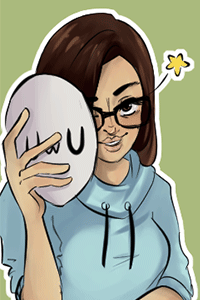
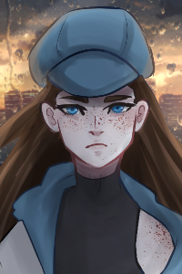
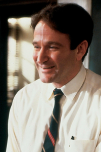
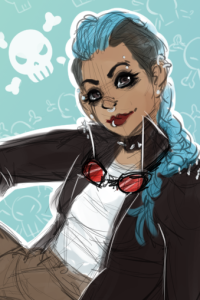

Izzy and her Characters
This is my character gallery. Click on each icon to find out more about them!
- 
- 
- 
- 
This is my character gallery. Click on each icon to find out more about them!
Hi, I'm Izzy! I'm 20 and studying to be a web developer.
I have no particular triggers, so anything goes with me. The only thing that's important for me is that whatever I'm doing has meaning, has some sort of effect on either of our characters.
If you wanna get to know me, hit me up on Discord!
Blake is 19 and agender. They were born male and constantly forced to be a girl by their mother. They've been put through lots of mental abuse while growing up, and it shows in their subservient nature.
Blake is very gentle and learning herbology and medicine, so if anybody ever needs help, just call on them.
Billy Bob is 42 and male. Billy Bob Jackson loves his wife, Lina, and his daughter, Amelia. That's why, after being fired from his desk job of 20+ years, he turned to the black market to continue supporting his precious family.
He's very punny and always looking to make children happier, since he wants a better life for them.
Dani is 21 and a rebel. She's been newly officially recruited into the Odonton Rangers.